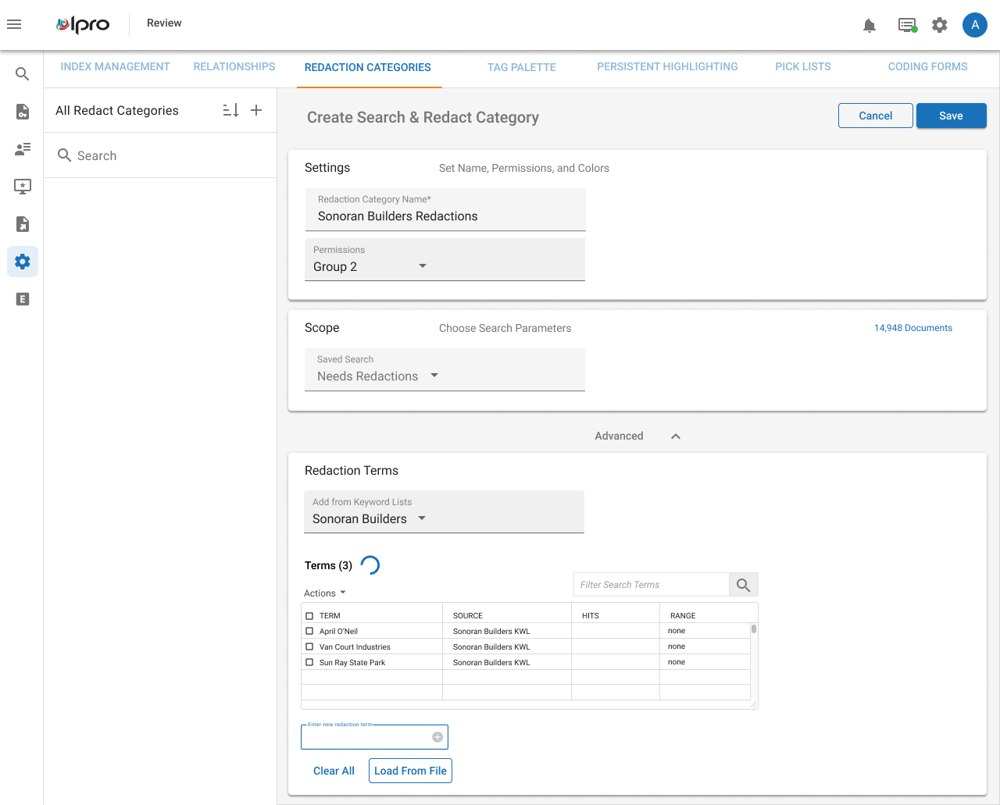
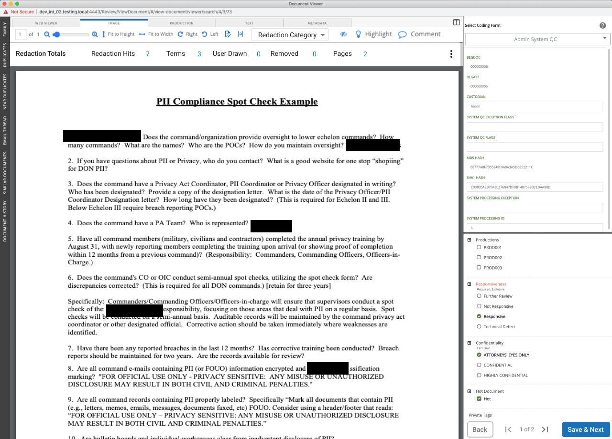

The redesigned transcript workspace — annotations, issues, and exhibits accessible without losing sight of the document.
IPRO
Redesigning the transcript annotation workspace so legal professionals never lose sight of their documents.
About IPRO
IPRO is a legal technology company whose suite of e-discovery tools is an industry standard among litigation attorneys and corporations. Their platform handles the full eDiscovery lifecycle — identifying, preserving, collecting, processing, reviewing, and producing electronically stored information (ESI) for use in legal cases and investigations.
The redesigned transcript workspace — annotations, issues, and exhibits accessible without losing sight of the document.
The Problem
Legal professionals using IPRO's transcript review tool had a fundamental problem: every time they tried to annotate a document — tagging an issue, linking an exhibit, or adding a note — a modal popped up and covered the transcript text. They literally couldn't see what they were working on.
This forced users into a constant cycle of reading, remembering, opening the modal, making an edit, closing it, and re-finding their place. Combined with opening links in new tabs and juggling the exhibit manager, reviewers were spending as much energy navigating the interface as they were doing their actual work.
The UI had also grown cluttered over time. A single Cancel/OK pattern handled issues, exhibits, and notes — three distinct actions crammed into one interaction model.

Before — the original workspace with modal-based annotation flow.
After — side panel approach keeps the transcript visible at all times.
The Solution
The core design move was transitioning from a single blocking modal to a set of collapsible side panels. This kept the transcript visible while users annotated, tagged, and linked — eliminating the context-switching that had plagued the old experience.
Key design decisions included:

Redaction categories — organizing redaction rules for consistent, repeatable application across documents.

Suggested redactions — surfacing likely redaction targets to accelerate the review process.
Design Detail
The annotation system relied heavily on colored highlights, but the existing approach created problems. Blue underlined links were an accessibility issue — and with multiple IPRO features requiring text emphasis (entity highlighting, annotations, redactions, search results), the same visual style was being reused for entirely different functions.
I moved away from underlines to dotted outlines for selected text, making the distinction between issue highlights and links immediately clear. This also left room for future URL linking without visual collision.
For the color system, I stuck with highlighting but developed a researched palette of accessible colors that could be recycled across IPRO's entire product suite. Users could also control opacity and contrast as needed — critical for professionals spending hours reviewing dense documents.
Outcome
The redesigned workspace fundamentally changed how legal reviewers interacted with transcripts. By keeping the document visible at all times and making annotations feel like a natural extension of reading rather than an interruption, we reduced the cognitive overhead of a task that already demands intense focus.
The modular panel system also opened the door to future enhancements — exhibit management, expanded linking, and deeper integration with IPRO's broader review tools — all without adding another modal to the stack.